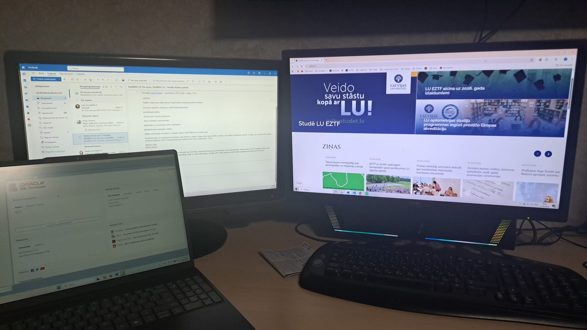

Elektroniskā studenta dienasgrāmata
Mana studiju nedēļa datorikā
Nedēļas lekcijas, darbi, transports un uzdevumi vienā pārskatāmā lapā.
Mana studiju nedēļa
Septiņas dienas, septiņi studiju stāsti
Šajā lapā apkopota datorikas studenta nedēļa: lekcijas, transports starp mājām, studijām un darbu, mājasdarbi, kontroldarbi, kā arī īsa katras dienas noskaņa attēlos.
Vietnes mērķis
Personīgais nedēļas plānotājs
Šī mājaslapa ir izveidota kā elektroniska studenta dienasgrāmata, kurā apkopota mana viena studiju nedēļa datorikā. Tās mērķis ir parādīt, kā tiek plānota ikdiena, apvienojot studijas, darbu, transportu, mājasdarbus un brīvo laiku.
Lapā ir pieejama informācija par katru nedēļas dienu: īss dienas apraksts, attēls, uzdevumu progress, mājasdarbu un kontroldarbu skaits, kā arī transporta un laika plānošanas elementi. Tas palīdz ātri saprast, kas konkrētajā dienā ir jāizdara un kā tiek organizēts studenta ikdienas ritms.
Interaktīvie elementi, piemēram, uzdevumu atzīmes un dienu navigācija, padara mājaslapu praktiskāku un ērtāk lietojamu. Katrai dienai pievienotie attēli palīdz labāk uztvert noskaņu un padara lapu vizuāli interesantāku.